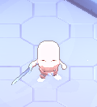
Grunt
Walks up and swings its sword in a wide arc. Slow to recover.
Base health 34, rising with depth. Elites are bigger, armored and tinted crimson.
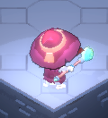
Hexer
Keeps its distance and fires aimed bolts down a red line. Close in fast.
Base health 24, rising with depth. Elites are bigger, armored and tinted crimson.
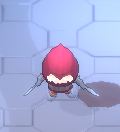
Stalker
Fast. Shows a short red line, then lunges along it. Step aside.
Base health 28, rising with depth. Elites are bigger, armored and tinted crimson.
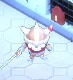
Brute
Armored and heavy. Slams the ground around itself after a long windup.
Base health 90, rising with depth. Elites are bigger, armored and tinted crimson.
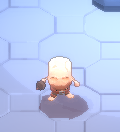
Sapper
Small, fast and carrying a bomb. It runs up and lights the fuse: get out of the circle, or stun it to put the fuse out.
Base health 18, rising with depth. Elites are bigger, armored and tinted crimson.
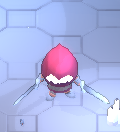
Whirler
Spins toward you with both blades out, then stands dizzy. Back off while it spins, and hit it while it reels.
Base health 60, rising with depth. Elites are bigger, armored and tinted crimson.
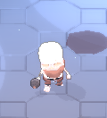
Slinger
Lobs bone bombs at where you stand. The red circle is where it lands, so keep moving.
Base health 26, rising with depth. Elites are bigger, armored and tinted crimson.
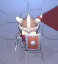
Shieldbearer
Blocks almost everything from the front and turns slowly. Dash past it and hit its back.
Base health 50, rising with depth. Elites are bigger, armored and tinted crimson.
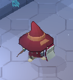
Bonecaller
Hangs back and raises grunts from the floor. Kill it first.
Base health 30, rising with depth. Elites are bigger, armored and tinted crimson.
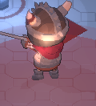
The Warden, Keeper of the Lock
Slams, volleys and charges, and calls skeletons when hurt.
Boss. Base health 420, rising with depth.
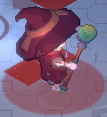
The Hollow Prior, Speaker for the Dead
Fires rings of bolts, rains fire on where you stand, and blinks away when you close in. Calls hexers when hurt.
Boss. Base health 360, rising with depth.
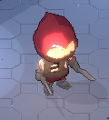
The Reaver, Blade of the Deep
Lunges three or four times in a row, then throws a fan of knives. Calls stalkers when hurt.
Boss. Base health 380, rising with depth.